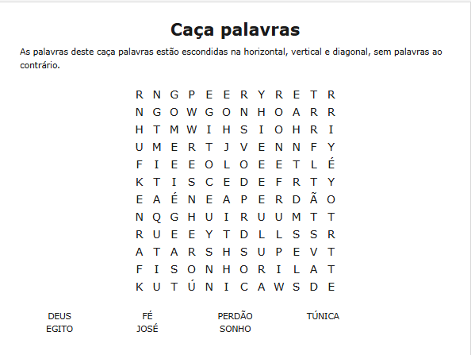
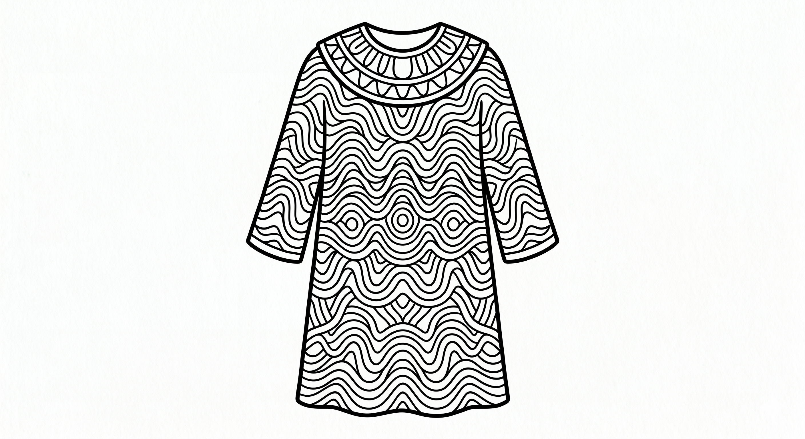
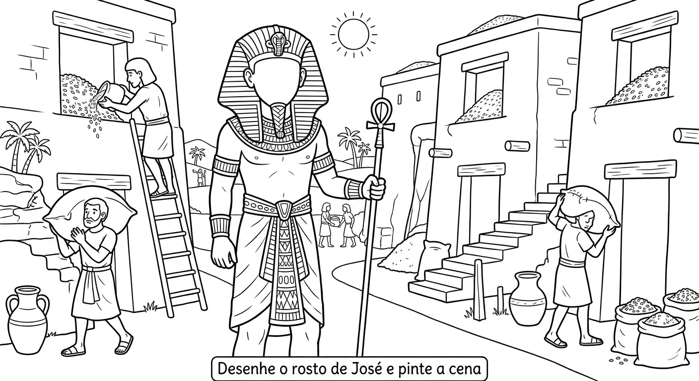
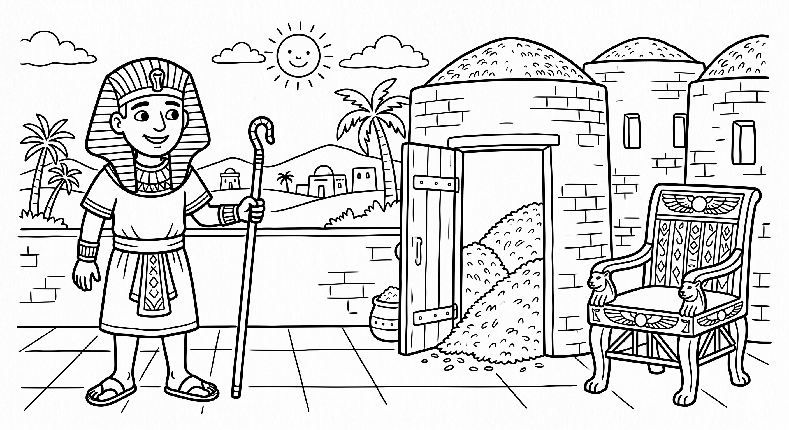
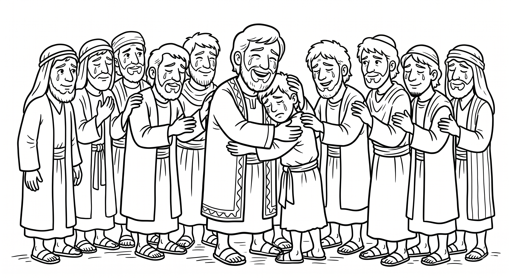

Semana 4 – José e o Sonho de Deus
José recebeu sonhos de Deus mostrando que um dia seria um líder. Deus também coloca sonhos em nosso coração.
Encontre as palavras escondidas e marque-as na lista.

Jacó deu a José uma linda túnica colorida. Deus também nos envolve com Seu amor único.
Pinte a túnica de José com as cores mais alegres. Depois escreva: "Deus me ama de um jeito especial".

Por inveja, os irmãos venderam José. Mesmo na injustiça, Deus estava no controle e tinha um plano.
Desenhe o rosto de José como você imagina que ele era. Depois pinte a cena toda.

Semana 4 – José e o Sonho de Deus
Mesmo na prisão, Deus deu a José o dom de interpretar sonhos. Nossos dons vêm dEle.
Desenhe ou escreva sobre um sonho que você tem para o futuro. Depois ore pedindo a direção de Deus.
José passou de prisioneiro a governador. Deus honra os que esperam nEle.
Pinte o desenho de José como governador. Escreva ao lado uma qualidade que você admira nele.

José perdoou seus irmãos. O perdão liberta e mostra que confiamos no plano de Deus.
Pinte a cena do reencontro. Depois escreva uma curta oração de perdão.

Esta frase resume a história de José. Deus pode transformar qualquer situação ruim em algo bom.
Responda com suas palavras: